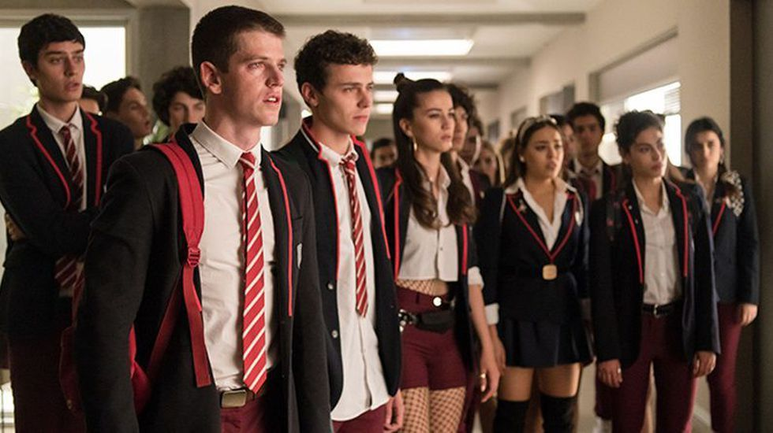

Breve Resumo Sobre a 2ª Temporada de ÉLITE
1. O RETORNO DE POLO: A 2ª temporada de Elite havia sido finalizada justamente com o retorno de Polo ao colégio Las Encinas. E é exatamente assim que a série inicia na 3ª temporada, trazendo novamente a imagem dos colegas observando a chegada dele.
Polo não queria retornar, mas por insistência de suas mães acabou cedendo e voltando a frequentar o colégio mesmo não sendo mais bem-vindo.
2. NADIA E MALICK: Malick é um dos novos integrantes do elenco de Elite na terceira temporada. Ele é um jovem muçulmano de família rica, que apesar de sua religião, possui um estilo de vida um pouco diferente, pois questiona boa parte das regras impostas por seus pais.
Logo ele se aproxima de Nadia, e começa justamente a ensiná-la que ela pode ser uma boa filha sem necessariamente seguir 100% do que a religião prega.
Os dois se envolvem e Nadia vê nele uma chance de conseguir a permissão dos pais para estudar fora.
3. CARLA VOLTA ATRÁS NA ACUSAÇÃO DE POLO: Desde a confissão de Carla sobre quem matou Marina, ela passou a sofrer bastante pressão, tanto da família de Polo (o responsável pelo crime), quanto de sua própria família, que não queria mais estar envolvida nesse conflito.
Carla estava decidida a manter sua versão dos fatos, porém na hora do julgamento de Polo, ela voltou atrás dizendo que havia inventado tudo por sentir raiva dele.
4. YERAY E CARLA: Outra grande mudança na série foi que o casal Carla e Samuel passou a não existir após o término da 2ª temporada.
Quem acompanhou a segunda parte viu que eles se aproximaram muito, porém no começo se tratava de um plano de Samuel justamente para que Carla entregasse Polo, já que ele tinha certeza que ela escondia algo.
Porém, eles acabaram se apaixonando, fazendo com que Samuel colocasse em prática um plano de se passar por morto para que ela confessasse tudo antes que eles se envolvessem mais.
No fim, o plano deu certo, o que fez com que, obviamente, Carla não confiasse mais nele.
E assim, na terceira temporada surge Yeray, outro dos novos integrantes do elenco, que já chega sabendo muito da vida de Carla e decidido a conquistá-la.
Ele é um jovem milionário que conseguiu sua fortuna com seus próprios méritos, o que chama atenção dela -, e de seu pai também, que está passando por dificuldades financeiras e vê nele uma forma de recuperar sua empresa.
5. ANDER TEM LEUCEMIA: Muitos fãs da série chegaram a imaginar essa possibilidade para Ander, pois o ator Arón Piper, responsável pelo personagem, postou em sua conta do Instagram algumas fotos de cabelo raspado, levantando a suspeita de o personagem ter câncer.
E realmente aconteceu! Logo no começo Ander demonstrou incômodo e ao ir ao médico recebeu a notícia sobre a doença.
Inicialmente, ele escondeu de todos, mas com o início do tratamento ficou impossível e acabou revelando para sua família e, posteriormente, aos amigos.
6. GUZMÁN E SAMUEL TENTAM A CONFISSÃO DE POLO: Cada vez mais obcecados por fazer com que Polo confessasse que era o responsável pelo assassinato de Marina, Guzmán, com ajuda de Samuel, bola um plano para prender o suspeito e fazê-lo falar.
Polo fica desacordado por um tempo e quando reage está amarrado em uma cadeira, com um vídeo de Marina passando na tv, e Guzmán disposto a tudo para que ele conte onde está o troféu usado para golpear a irmã.
Com tanta pressão, Polo acaba confessando que foi ele mesmo que a matou, mas para evitar mais um acidente, Samuel decide soltá-lo e deixa com que ele volte para casa.
7. REBECA E SAMUEL: Com o afastamento de Carla, Rebeca vê uma oportunidade de dizer a Samuel que gosta dele. Desta vez, ele também está livre para se relacionar com ela, e acabam começando a se conhecer mais -, apesar de ambos saberem que ele ainda mantém um sentimento pela marquesa.
8. CAYETANA, VALERIO E POLO: Na primeira temporada o trio que surgiu foi Carla, Polo e Christian. Já na terceira temporada, quem acabou se envolvendo foi Cayetana, Polo e Valerio.
Cayetana e Polo já haviam te tornado um casal ao final da 2ª parte, especialmente pelo apoio que ela deu a ele quando todos se afastaram. Mas como eles não estavam indo tão bem sozinhos, surgiu a possibilidade de incluir Valerio no relacionamento para tentar salvá-lo.
9. MALICK E OMAR: Sim, esta é uma reviravolta e tanto na temporada. Malick chegou se aproximando de Nadia, e tudo indicava que iam ser um dos principais casais de Elite, porém em um determinado momento ele confessou a Omar, irmão da muçulmana, que, assim como ele, também se interessava por homens.
Não demorou muito para Nadia desconfiar que algo estava errado e acabou descobrindo o envolvimento do “namorado” com o irmão.
Só que mesmo com tudo isso Nadia decidiu manter um relacionamento de fachada com Malick, pois ela dependia dele para que os pais a deixassem ir para Nova York.
10. NADIA E LUCRECIA GANHAM BOLSA JUNTAS: Outro acontecimento marcante na série foi a bolsa de estudos disponibilizada pelas mães de Polo que Nadia e Lucrecia começaram a disputar.
Lu acabou sendo deserdada pelos pais e viu na bolsa uma oportunidade de conseguir seguir os estudos. Mas após todos os trabalhos apresentados, Nadia saiu vitoriosa.
Porém, após elas terem desenvolvido uma relação muito legal durante a temporada, Nadia decidiu compartilhar a bolsa com Lu.
No fim, quando foram receber a premiação, ambas decidiram que não era o certo a ser fazer, pois a bolsa havia sido cedida pelas mães de Polo apenas para limpar a imagem dele após o assassinato de Marina.
11. A MORTE DE POLO: No segundo capítulo já foi revelado que Polo morria na 3ª temporada, porém, somente no episódio 8 é que foi mostrado o que levou a isso.
Todos os alunos do Las Encinas foram ficando incomodados por Polo transitar entre eles como se nada tivesse acontecido, e isso foi ganhando cada vez mais proporção.
Na festa de formatura, Polo apareceu de “surpresa”, pois queria contar a Lu que tinha pedido para que suas mães mantivessem a bolsa de estudos, e também dizer a Guzmán que havia decidido se entregar para a polícia e que esperava que algum dia ele o perdoasse.
Porém, após ir ao banheiro para se limpar de uma bebida que Lu jogou nele, ela foi atrás com uma garrafa quebrada, começa uma discussão com ele e acaba o atingindo bem no peito com o vidro.
Ele sai desnorteado e termina caindo do andar superior já praticamente morto.
12. INVESTIGAÇÃO SOBRE O ASSASSINATO: Mesmo que todos soubessem quem matou Polo, eles não queriam que mais uma vez passassem por todo o transtorno do último ano desde a morte da Marina, e menos ainda queriam deixar que Lu fosse presa pelo trágico incidente que acabou tirando a vida do colega.
Foi assim que todos decidiram se alto incriminar, primeiramente deixando as digitais na garrafa, e depois se acusando mutuamente para deixar a investigadora confusa.
Rebeca acusou Samuel; Samuel acusou Valerio; Valerio acusou Cayetana; Cayetana acusou Ander; Ander acusou Guzmán; Guzmán acusou Omar; Omar acusou Nadia; Nadia acusou Carla; Carla acusou Rebeca; Lu não acusou a nenhum deles.
Por fim, a investigação concluiu que se tratou de suicídio por não conter provas concretas contra nenhum deles.
13. A DESPEDIDA DE GUZMÁN E NADIA: Ainda na saída da festa de formatura, Nadia e Guzmán se despedem com um beijo. Ela diz que vai para Nova York, mas deixa em aberto a possibilidade de voltarem a ficar juntos.
14. A DESPEDIDA DE CARLA E SAMUEL: Carla e Samuel também se despedem. A marquesa conta que vai estudar fora, e ele pergunta se ela aceita visita, recebendo a seguinte resposta: “Depende. Vai levar macarrão?”.
Então, também fica em aberto a possibilidade de o casal voltar a se formar na 4ª temporada de Elite.
15. OMAR E ANDER FICAM JUNTOS: Apesar do envolvimento de Omar com Malick, quando estava prestes a ir para Nova York com a irmã, ele decide que, na verdade, quer ficar ao lado de Ander.
Ao voltar para encontrá-lo no hospital, ainda recebe a boa notícia de que o câncer está regredindo.
16. O RECOMEÇO DAS AULAS EM LAS ENSINAS: Chegou a hora de começar mais um ano no Las Encinas. Desta vez, apenas Guzmán, Samuel, Omar, Ander e Rebeca estão por lá, já que todos os outros se formaram.
Outra que surge na cena é Cayetana, que está limpando o chão do colégio, após decidir que ia assumir sua vida e aceitar suas condições e tentar crescer com seus próprios esforços.
ÉLITE HISTORY ÉLITE 2 HISTORY ÉLITE 4 PREVIEW